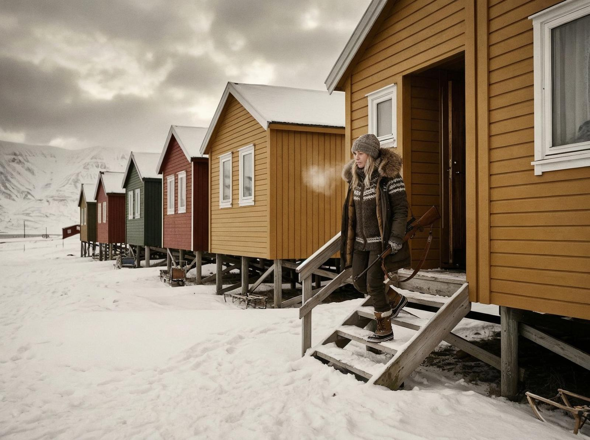
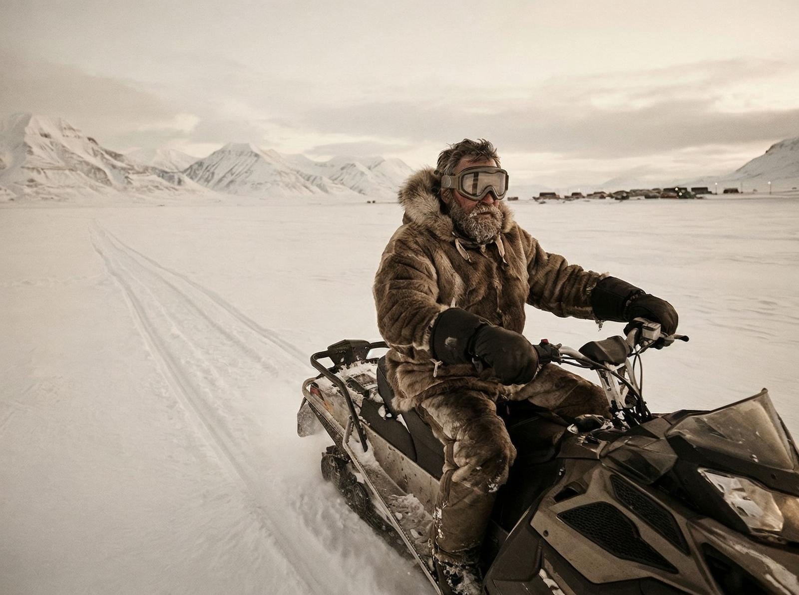

Aterizez pe aeroportul Svalbard și primul lucru pe care îl văd e un urs polar pe semnul care spune "ATENȚIE: URSI POLARI ÎN ZONĂ". E începutul anului și deja e întuneric complet — soarele nu va apune până în aprilie, dar nici nu va răsări până în februarie. Longyearbyen e situat la 78 de grade latitudine nordică, la jumătatea drumului dintre Norvegia continentală și Polul Nord.
Acesta nu e un oraș obișnuit. E așezământul cel mai nordic cu o populație de peste 1.000 de locuitori — aproximativ 2.000 de oameni care trăiesc în condiții pe care majoritatea nu le-ar putea nici măcar imagina. Temperatura coboară frecvent la minus 30 de grade iarna, dar oamenii merg la muncă, la școală, la cumpărături, exact ca în orice oraș european.
Ceea ce e interesant e că Longyearbyen are o regulă unică în lume: nu ai voie să moară aici. Nu e o glumă — cimitirul local a fost închis în anii '50 pentru că corpurile nu se descompun în permafrost. Dacă cineva e bolnav terminal, este transportat pe continentul norvegian pentru tratament. Chiar și pisicile domestice sunt interzise — nu se vrea să afecteze fauna locală, în special păsările migratoare.

Mergi pe străzile orașului și vezi clădiri vopsite în culori vii — roșu, albastru, galben, verde. Nu e pentru estetică — e pentru a putea găsi drumul în timpul nopții polare, când întunericul e absolut timp de patru luni. Există o biserică, un muzeu, o universitate, un hotel, restaurante, chiar și o bibliotecă. Viața continuă, chiar dacă soarele nu.
Longyearbyen e fondat în 1906 de John Munroe Longyear, un american care a venit în căutarea cărbunelui. Orașul a crescut în jurul minelor, dar azi cărbunele nu mai e sursa principală a economiei. Turismul, cercetarea științifică și educația au luat locul. Există o universitate care atrage cercetători din întreaga lume, fascinați de condițiile extreme de Arctic.
Poate că cel mai surprinzător lucru e că viața continuă în ciuda tuturor restricțiilor. Nu ai voie să naști aici — viitoarele mame trebuie să plece pe continent cu cel puțin patru săptămâni înainte de termen. Nu ai voie să ai arme, decât cu permisiune specială, pentru protecția împotriva urșilor. Dar oamenii rămân. Unii de câțiva ani, alții de zeci.

E genul de loc pe care îl înțelegi doar când vezi aurora boreală dansând pe cerul întunecat. Sau când vezi soarele de la miezul nopții în luna iulie, când nu e niciodată întuneric. Longyearbyen e un oraș unde timpul e diferit — unde ziua durează patru luni și noaptea patru luni, unde anotimpurile sunt inversate față de restul lumii.
Orașele obișnuite nu arată așa. Longyearbyen nu e despre confort, e despre adaptare. E despre oameni care au găsit să trăiască în cel mai ostil mediu de pe planetă, care au construit o comunitate la marginea lumii, care continuă să existe în ciuda tuturor obstacolelor.
Nu trebuie să ajungi acolo ca să înțelegi. Longyearbyen e o demonstrație că civilizația poate exista oriunde — chiar la 1.300 km de Polul Nord, chiar în întuneric absolut, chiar unde soarele nu apune patru luni pe an.